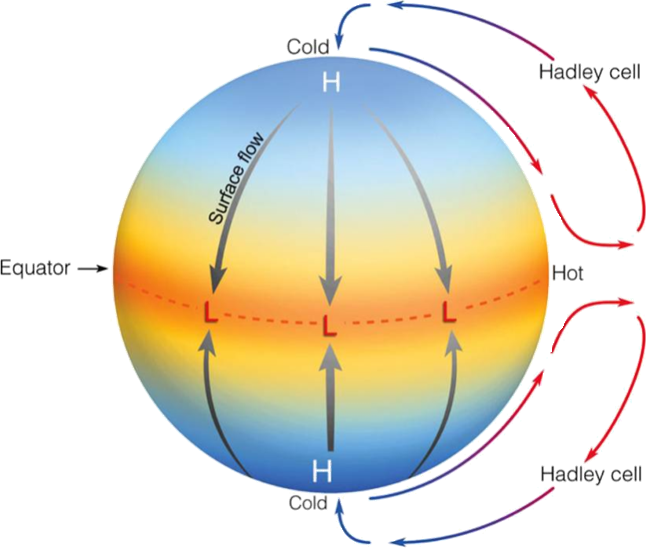

Lecture 9 – Atmospheric Thermodynamics
Climate Reanalysis
Climate reanalyses combine past observations with models to generate consistent time series of multiple climate variables. A climate reanalysis gives a numerical description of the recent climate. It contains estimates of atmospheric parameters such as air temperature, pressure and wind at different altitudes, and surface parameters such as rainfall, soil moisture content, ocean-wave height and sea-surface temperature. The estimates are produced for all locations on earth, and they span a long time period that can extend back several decades or more. Newly available remotely-sensed data, the development of Earth System models, and the benefits that would derive from more consistent states across analysis components, all point to a considerable interest in integrated Earth System reanalysis systems, including some level of coupling among the various analysis components (e.g., atmosphere and ocean).Inter-Tropical Convergence Zone (ITCZ)
The ITCZ appears as a band of clouds consisting of showers and occasional thunderstorms that encircles the globe near the equator. Scientists call this area intertropical convergence zone to reflect the influences of wind convergence on conditions near the equator. Strong heating in the ITCZ causes surface air to expand and rise. The humid, rising, expanding air loses moisture as rainm some of which contributes to the success of tropical rain forests. The position of the ITCZ varies seasonally because it follows the Sun; it moves north in the Northern Hemisphere summer and south in the Northern Hemisphere winter. As a result, the ITCZ is responsible for the wet and dry seasons in the tropics.Hadley Cells
Because of the differential heating over the globe, Hadley already knew in 1735 that some kind of energy transport must occur from the equator to the poles. He described a circulation cell that would extend all the way to the poles as shown below: (Hadley cells could extend all the way to the poles. Credit: Lyndon State College Atmospheric Sciences.)
With very simple arguments of momentum conservation (Held and Hou, 1980) we are going to show that Hadley's vision is not physically reasonable.
The angular momentum of the air parcel is given by:
\[
M = \Omega r^2 + u r
\]
Since \( r = a \cos \varphi \), the moment arm is:
\[
r_{\bot} = a \cos(\varphi)
\]
Substituting into the equation for \( M \):
\[
M = \Omega a^2 \cos^2 \varphi + u a \cos \varphi
\]
If the parcel is not moving at the equator, then \( u = 0 \), and the angular momentum at the equator is:
\[
M_{\text{Eq}} = \Omega a^2
\]
Conservation of angular momentum implies:
\[
M = M_{\text{Eq}} = \Omega a^2 = \Omega a^2 \cos^2 \varphi + u a \cos \varphi
\]
Solving for \( u(\varphi) \), using the identity \( \sin^2 \varphi = 1 - \cos^2 \varphi \), we get:
\[
u(\varphi) = \Omega a \frac{\sin^2 \varphi }{\cos \varphi }
\]
You can see how this is related to the classical definition of angular momentum
$$ L = I \omega$$
The moment of inertia per unit mass is in units of meters$^2$
The classical angular momentum for a rotating object is:
$$
\underbrace{L}_{\text{angular momentum}} = \underbrace{I}_{\text{moment of inertia}} \cdot \underbrace{\omega}_{\text{angular velocity}}
$$
For an air parcel of unit mass at latitude $\varphi$, its absolute angular momentum about the Earth's rotation axis is:
$$
M =
\underbrace{\Omega}_{\text{rotation}} \cdot
\underbrace{r^2}_{\text{moment of inertia}} +
\underbrace{u}_{\text{zonal velocity}} \cdot
\underbrace{r}_{\substack{\text{moment arm} \\ r = \underbrace{a}_{\text{Earth's radius}} \cos \varphi}}
$$
So:
$$
M = \underbrace{\Omega}_{\text{planetary rotation}} \cdot \underbrace{a^2 \cos^2 \varphi}_{r^2} + \underbrace{u}_{\text{relative velocity}} \cdot \underbrace{a \cos \varphi}_{r}
$$
If we treat the air parcel as a point mass $m = 1$, then:
$$
I = m r^2 = \underbrace{a^2 \cos^2 \varphi}_{\text{moment of inertia per unit mass}}
$$
The total angular velocity is the sum of Earth's rotation and the parcel’s relative motion:
$$
\omega = \underbrace{\Omega}_{\text{planetary rotation}} + \underbrace{\frac{u}{r}}_{\text{relative contribution}} = \Omega + \frac{u}{a \cos \varphi}
$$
So the total angular momentum becomes:
$$
L = I \omega = \underbrace{a^2 \cos^2 \varphi}_{I} \left( \underbrace{\Omega}_{\text{rotation}} + \underbrace{\frac{u}{a \cos \varphi}}_{\text{relative motion}} \right)
$$
$$
L = \Omega a^2 \cos^2 \varphi + u a \cos \varphi = M
$$
This shows that the atmospheric expression for angular momentum,
$$
M = \Omega a^2 \cos^2 \varphi + u a \cos \varphi
$$
is equivalent to the classical expression $L = I \omega$, when the moment of inertia and angular velocity are appropriately defined for a rotating air parcel
The Radiative Equilibrium Distribution
- The radiative equilibrium temperature is a hypothetical temperature distribution if there were no atmospheric and oceanic motion. Only based upon the radiative properties of the atmosphere (e.g. clouds and moisture, etc).
- The radiative equilibrium temperature has a much stronger pole-to-equator gradient than does the effective emitting temperature, indicating that there is a poleward transport of heat.
- Radiative forcing thus seeks to maintain a pole-to-equator temperature gradient, and the ensuing circulation seeks to reduce this gradient.
((a) The (approximate) observed net average incoming solar radiation and outgoing infrared radiation at the top of the atmosphere, as a function of latitude (plotted on a sine scale).
(b) The temperatures associated with these fluxes, calculated using $T = \left( \frac{R}{\sigma} \right)^{1/4}$,
where $R$ is the solar flux for the radiative equilibrium temperature and $R$ is the infrared flux for the effective emitting temperature.
Thus, the solid line is an approximate radiative equilibrium temperature. Credit: G. Vallis, 2017.)
Potential Temperature
Potential temperature is defined as the temperature that a parcel of air would have if it were expanded or compressed adiabatically (without exchange of heat or matter with the surroundings) from its current pressure to a standard reference pressure, typically 1000 hPa (or 1 bar). Thus, if air flows across a mountain range it will first cool down and then heat up, but the potential temperature will stay constant. Thus potential temperature is the dynamically relevant quantity. The equation to calculate potential temperature (Θ) from the actual temperature (T) is: $$ \Theta = T \cdot \left( \frac{P_0}{P} \right)^{\frac{R}{c_p}} $$- $\Theta$ is the potential temperature
- $T$ is the actual temperature
- $P$ is the atmospheric pressure
- $P_0$ is the reference (surface) pressure (often 100,000 Pa)
- $R$ is the specific gas constant for dry air
- $c_p$ is the specific heat capacity of air at constant pressure
Adiabatic Flow
$$ \frac{D}{Dt} \log \left[ \frac{T}{T_0} \left( \frac{p_0}{p} \right)^{R/c_p} \right] = \frac{J}{c_p T} $$ Adiabatic flow → $J = 0$ $$ \frac{D}{Dt} \left[ T \left( \frac{p_0}{p} \right)^{R/c_p} \right] = 0 $$ Potential temperature $ \theta = T \left( \frac{p_0}{p} \right)^{R/c_p} $ is the temperature an air parcel would have if its pressure were adiabatically adjusted to the reference pressure $p_0$ $$ \Rightarrow \frac{D\theta}{Dt} = 0 \quad \text{(potential temperature is conserved under adiabatic flow)} $$ Typically $p_0$ represents sea-level pressure ($10^5$ Pa = 1000 hPa). In this case, potential temperature is defined as the temperature an air parcel (with temperature $T$ and pressure $p$) would have if it was adiabatically brought to sea-level pressure.Potential temperature is closely associated with entropy (constant potential temperature is the same as constant entropy).
- Adiabatic flow is the one that does not involve heat transfer, i.e., there is no heat added or taken away from the flow
- Entropy should increase along an adiabatic flow $$ ds \geq \frac{\delta q}{T} = 0 \Rightarrow ds \geq 0 $$
Ideal Gas Law
The ideal gas law is an equation which relates pressure, density and temperature and applies for many fluids where intermolecular attractions are negligible. Atmosphere is composed of air, which is a mixture of gases (treated as an ideal gas). Below an altitude of 100 km, the atmosphere behaves as a fluid (under the continuum hypothesis). $$ \Rightarrow \quad p = \rho R_d T $$- $p$: Pressure (Pa)
- $\rho$: Density (kg/m³)
- $R_d$: Ideal gas constant for dry air
- $T$: Temperature (Kelvin)
Horizontal Momentum
$$ \underbrace{\frac{D\mathbf{u}}{Dt}}_{\text{Acceleration (change in momentum)}} = \overbrace{ \underbrace{-\frac{1}{\rho} \nabla p}_{\text{Pressure Gradient Force: Initiates motion}} + \underbrace{\nu \nabla^2 \mathbf{u}}_{\text{Friction / Viscosity: Opposes motion}} }^{\text{Surface}} + \overbrace{ \underbrace{-g\mathbf{k}}_{\text{Gravity: Stratification / buoyancy}} }^{\text{Body}} + \overbrace{ \underbrace{f v \mathbf{i} - f u \mathbf{j}}_{\text{Coriolis: Modifies motion}} }^{\text{Apparent}} $$ For an atmosphere in hydrostatic balance, pressure corresponds to the total mass of the atmosphere above that point. Consequently, pressure must decrease monotonically with height. This makes pressure a good choice as a vertical coordinate. The use of pressure as a vertical coordinate greatly simplifies the equations of motion, the pressure gradient force simply reduces to the gradient of the geopotential on constant pressure surfaces!Horizontal momentum equations, height coordinate, no viscosity: $$ \frac{Du}{Dt} = -\frac{1}{\rho} \left( \frac{\partial p}{\partial x} \right)_z + fv $$ $$ \frac{Dv}{Dt} = -\frac{1}{\rho} \left( \frac{\partial p}{\partial y} \right)_z - fu $$ $$ \boxed{ \frac{D\mathbf{u}}{Dt} + f \mathbf{k} \times \mathbf{u} = -\frac{1}{\rho} \nabla_z p } $$ Horizontal momentum equations, pressure coordinate, no viscosity: $$ \frac{Du}{Dt} = - \left( \frac{\partial \Phi}{\partial x} \right)_p + fv $$ $$ \frac{Dv}{Dt} = - \left( \frac{\partial \Phi}{\partial y} \right)_p - fu $$ $$ \boxed{ \frac{D\mathbf{u}}{Dt} + f \mathbf{k} \times \mathbf{u} = -\nabla_p \Phi } $$ Observe density no longer explicitly present.
Air is compressible, altitude difficult to measure, and air cools as it expands. Thus, atmospheric scientists typically describe the atmosphere in terms of potential temperature (to remove the adiabatic effect of expansion which affects regular temperature), and pressure instead of depth.
The Overturning Circulation
(A simple model of the Hadley
Cell. Rising air near the equator moves
poleward near the tropopause, descending in the subtropics and returning.
The poleward moving air conserves its angular momentum, leading to a shear of
the zonal wind that increases away from
the equator. By thermal wind the temperature of the air falls as it moves poleward,
and to satisfy the thermodynamic budget
it sinks in the subtropics.
Credit: G. Vallis, 2017.)
Hadley Cell (Assumptions):
- 1. The circulation is steady
- 2. The polewards moving air conserves its angular momentum
- 3. The equatorwards moving flow is frictionally retarded and weak
- 4. The circulation is in thermal wind balance
- 5. There is solar heating from above, symmetric about the equator
- 6. The flow is symmetric about the equator
- 7. Potential temperature is conserved
- 8. The zonal velocity is zero at the equator (rising motion)
The Held-Hou Model of the Hadley Circulation
- Uses thermodynamic constraints to predict the width and strength of the Hadley Cell
- Angular Momentum is conserved
- Thermal wind balance needs to be true
- Predicts the temperature from the angular momentum balance
- Theory predicts the poleward edge of the Hadley Cell to be around 20°
Next: Project 5 – Hadley Cell